地政学
カンクンはメキシコのカリブ海側に開く国際観光の玄関で、北米、欧州、中南米からの航空便を受ける。ユカタン半島の遺跡、島、海洋保護区へ人を流し、観光政策と国境を越える消費が都市の形を決めている沿岸拠点だ。

🇲🇽 メキシコ / カリブ海 / World City Atlas
白砂のホテルゾーン、国際空港、マヤ遺産への動線、観光労働、急成長する住宅地、サンゴ礁と海岸リスクが重なるカリブ海都市。
都市の骨格
カンクンはホテルゾーンだけで成り立つ街ではありません。ラグーン沿いのリゾート、空港、港、内陸の住宅地、バス路線、従業員の通勤が一体になって観光都市を動かしています。
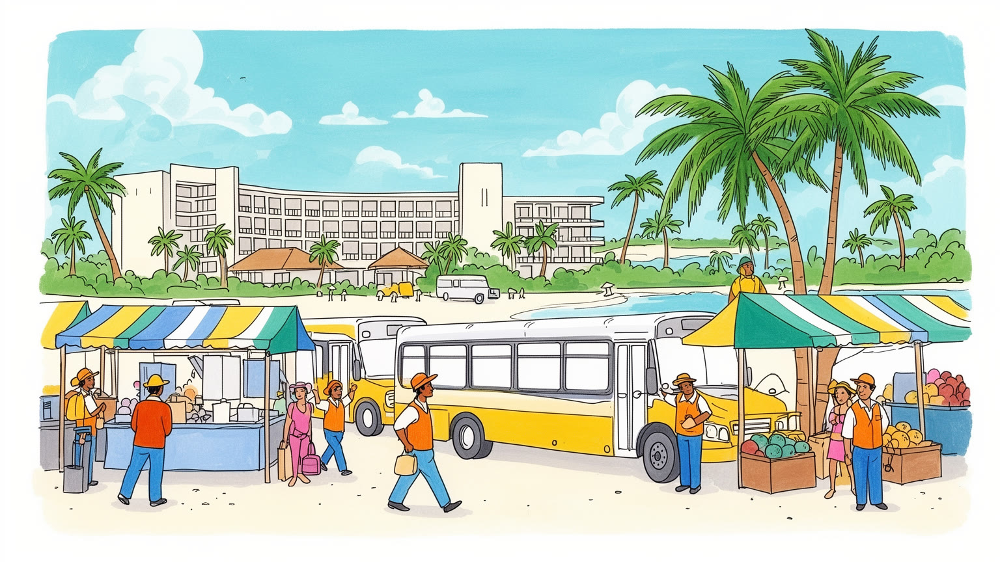
カンクンはメキシコのカリブ海側に開く国際観光の玄関で、北米、欧州、中南米からの航空便を受ける。ユカタン半島の遺跡、島、海洋保護区へ人を流し、観光政策と国境を越える消費が都市の形を決めている沿岸拠点だ。
宿泊、空港、飲食、清掃、警備、建設、送迎、ツアー販売が雇用の中心で、華やかな海辺の背後に交代勤務と長い通勤がある。チップ、季節変動、外資系ホテル、非正規労働が、観光都市の家計を左右する重要な条件になる。
街の観光イメージは国際的だが、地域の生活にはユカタンの食、マヤ系住民の移動、カトリック行事、家族経営の店が息づく。遺跡は過去の記念物である前に、現在の先住民文化と観光経済の関係を考える入口でもある。
訪問者は白砂、ナイトライフ、島巡り、セノーテを楽しむ一方、住民は家賃、交通費、台風、排水、治安、公共サービスの不足に向き合う。リゾートの成功は、内陸で働き暮らす人の都市条件を守れるかで評価される。
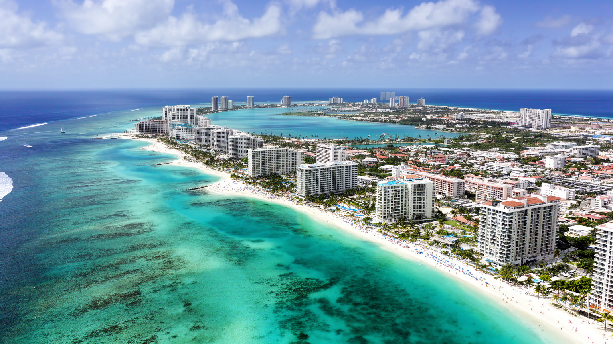
カンクンの都市構造は、カリブ海に面した細長いホテルゾーンと、内陸側に広がる生活市街地の対比から始まる。海側には白砂のビーチ、リゾートホテル、商業施設、マリーナ、ナイトライフが並び、ニチュプテ・ラグーンを挟んだ本土側には住宅地、行政、学校、市場、バスターミナル、従業員の暮らしが広がる。この分離は単なる景観の違いではない。観光客が経験する海辺のカンクンと、住民が通勤し買い物し子どもを育てるカンクンは、橋と道路で結ばれながらも、時間の使い方も物価も安全感覚も異なる。砂州は都市に強い商品価値を与えたが、同時に台風、高潮、侵食、排水の弱さを抱える。ラグーンは美しい背景であるだけでなく、開発圧力と環境保全が衝突する水域でもある。カンクンを見るには、海岸線のリゾートだけでなく、空港からホテルへ向かう道路、労働者のバス、内陸の住宅街、埋め立てと保護区の境界まで読む必要がある。都市の魅力は海の透明度に支えられるが、その海を守る制度と生活都市の基盤が弱ければ、観光都市の価値そのものが揺らぐ。さらに、海辺と内陸を結ぶ道の混雑、雨季の冠水、観光バスの動線は、地図上では短い距離を生活上の大きな負担へ変える。カンクンの地理は楽園の背景ではなく、誰が海に近く住み、誰が遠くから働きに来るのかを分ける社会的な骨格でもある。
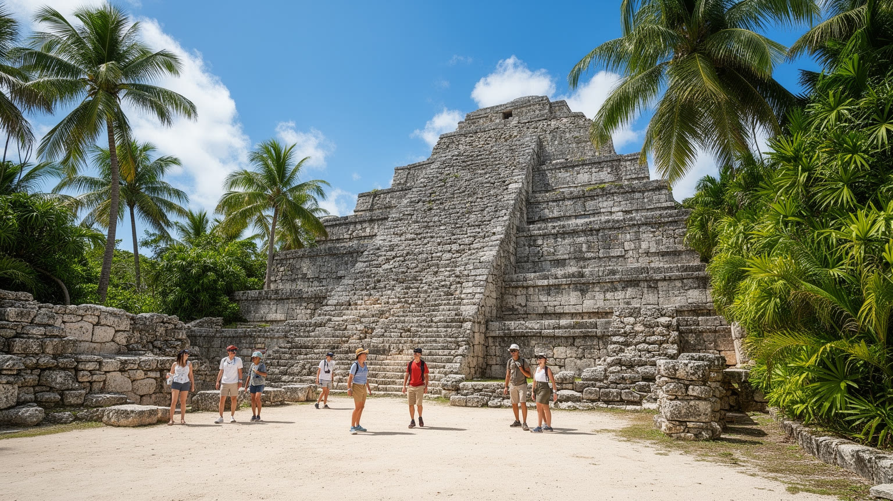
カンクンはしばしば新しいリゾート都市として語られるが、その観光価値はユカタン半島の長い歴史と切り離せない。チチェン・イツァ、トゥルム、コバ、エクバラム、数多くのセノーテへ向かう旅行者は、空港とホテルを起点にマヤ文明の遺跡を訪れる。ここで重要なのは、遺跡が単なる日帰り観光の商品ではなく、現在も続くマヤ系住民の言語、食、手仕事、土地利用、信仰の記憶とつながっていることだ。カンクンのホテルロビーで売られるツアーは、考古学、先住民文化、国民国家の歴史教育、地域の雇用を同時に含む。観光客がピラミッドや城壁を消費するだけなら、遺跡は写真の背景に縮んでしまう。だが、案内人、運転手、土産物の作り手、村の食堂、遺跡の保存職員の仕事に目を向けると、カンクンは海辺の娯楽都市であると同時に、歴史解釈を流通させる拠点になる。マヤの過去を強く宣伝するほど、現在の先住民が直面する貧困、土地、教育、観光収益の分配も問われる。玄関都市としてのカンクンの責任は、遺跡へ速く運ぶことだけではなく、訪れる人に地域の時間の厚みを伝えることにもある。セノーテを泳ぐ体験も、地下水脈、石灰岩地形、聖地としての記憶を含んでいる。短時間のツアーであっても、土地の脆さと文化の連続性を理解できるかで、観光の意味は大きく変わる重要な入口である。
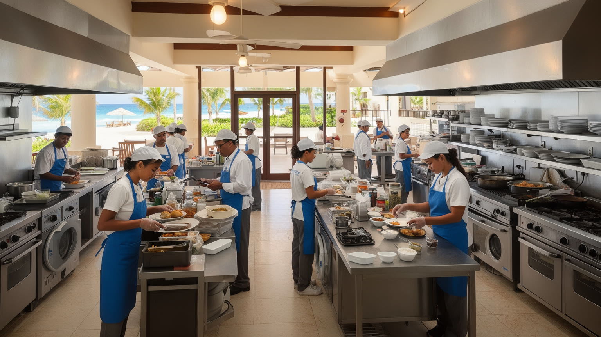
カンクンの産業は観光に強く依存している。ホテル、レストラン、バー、空港、タクシー、バス、清掃、警備、建設、ランドリー、ツアー会社、ダイビングショップ、結婚式や会議の運営が雇用を作り、外貨を地域へ運び込む。しかし、観光都市の収入は均等には分配されない。海辺の高級ホテルで支払われる料金の多くは、外資系企業、予約サイト、航空会社、投資家へ流れ、現場では長時間勤務、チップへの依存、季節による収入差、契約の不安定さが残る。早朝の厨房、深夜のバー、客室清掃、プール管理、送迎バス、建設現場、警備詰所がなければ、観光客が見る快適さは成立しない。従業員の多くはホテルゾーンの外から通い、交通費と時間を払いながら観光の舞台を支える。英語力や接客技能は収入機会を広げるが、言語や教育の差は職種の階層を作る。カンクンの経済を評価するには、宿泊者数や空港利用者数だけでなく、働く人が住める住宅、医療、保育、通勤、安全な労働条件を見なければならない。観光の成功は笑顔の接客だけで測れず、その笑顔を可能にする生活の安定によって支えられている。繁忙期には残業と臨時雇用が増え、閑散期には収入が細るため、家計は観光市場の波を直接受ける。技能訓練、労働組合、公共交通、保育の整備は、リゾートの品質を保つための見えにくい投資でもある。
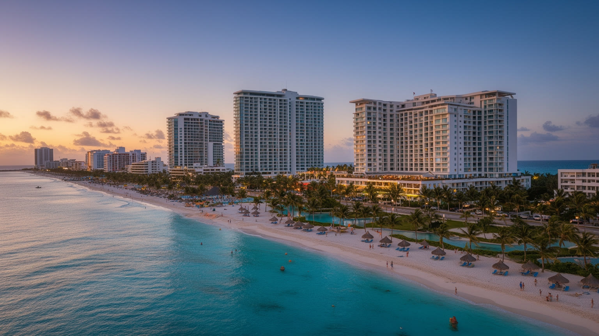
カンクンのホテルゾーンは、自然発生した旧市街ではなく、国際観光を目的に計画された海辺の舞台である。道路に沿ってホテル、ショッピングモール、クラブ、レストラン、ビーチアクセス、マリーナが並び、訪問者が短い滞在で海、食事、買い物、夜遊びを完結できるよう設計されている。この便利さは強い商品力を持つが、都市空間を観光客中心に単純化する危険もある。ホテルの敷地は外に開いているようでいて、実際には警備、私有地、予約、価格帯によって利用者を選別する。公共ビーチへのアクセス、海岸の維持、騒音、廃棄物、交通渋滞、ラグーンへの排水は、住民と行政が負担する問題になる。ホテルゾーンの景観は、カンクンの代表として世界に流通する一方、内陸の生活都市を見えにくくする。さらに、リゾート施設の更新や大型化は、ビーチの砂の補充、建物の耐風性、エネルギー消費、従業員移動をめぐる新しい課題を生む。ホテルゾーンを読むことは、観光客の快適さがどのように設計され、誰の移動や労働を背景に成立しているのかを読むことだ。美しい海岸の価値を守るには、閉じたリゾートの利益だけでなく、公共性と環境負荷を同時に考える必要がある。海への道が分かりにくいほど、ビーチは公共財でありながら私的な庭のように感じられる。観光地の洗練は、誰でも海に近づける権利と両立して初めて都市の成熟になる。
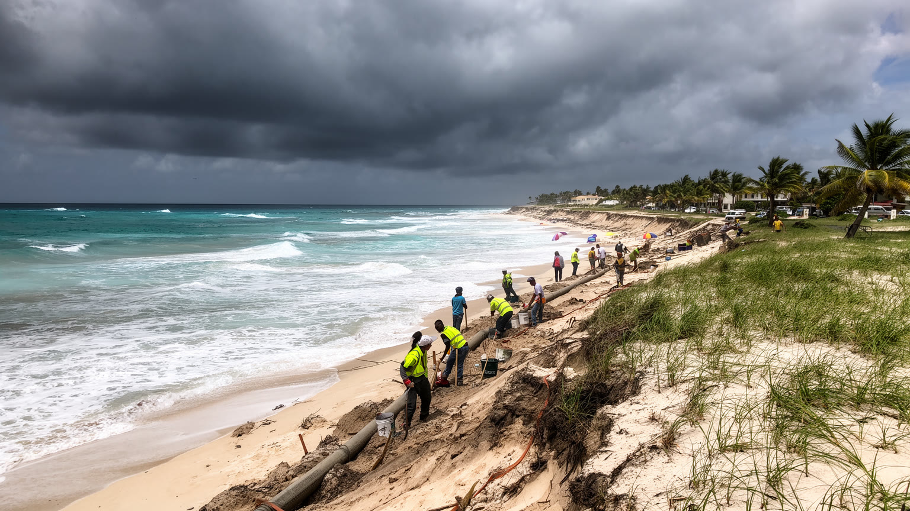
カンクンの美しさは、脆い海岸環境の上に成り立っている。カリブ海の透明な水、白い砂、サンゴ礁、ラグーンは観光の核心だが、同時に台風、高潮、海岸侵食、海面上昇、サルガッソ海藻の漂着、排水と水質悪化の影響を受けやすい。大型ハリケーンはホテル、空港、道路、住宅、電力、通信を一度に止める可能性があり、復旧の速さは観光収入だけでなく住民生活にも直結する。砂浜は自然に安定しているわけではなく、補砂、護岸、建物の後退、植生の回復、開発規制によって保たれる。短期的な収益を優先して海岸近くに建て込みすぎると、砂の移動や生態系を妨げ、長期的には観光資源を失う。サルガッソの大量漂着は見た目の問題にとどまらず、悪臭、清掃費、海洋環境、観光予約に影響する。気候リスクはホテルゾーンだけでなく、排水設備の弱い内陸住宅地にも偏って現れる。カンクンの将来を考えるには、災害後に観光を早く再開する体制と、普段から弱い地区を守る都市投資を結びつける必要がある。海岸都市としての成熟は、砂浜を商品として売る力ではなく、その砂浜と住民を長く守る能力によって測られる。保険料、建築基準、避難情報、停電時の給水、観光客の帰国手配まで含めて、危機管理はリゾート運営の一部である。気候変動が進むほど、海岸線の美しさと都市の安全は別々に語れなくなる。
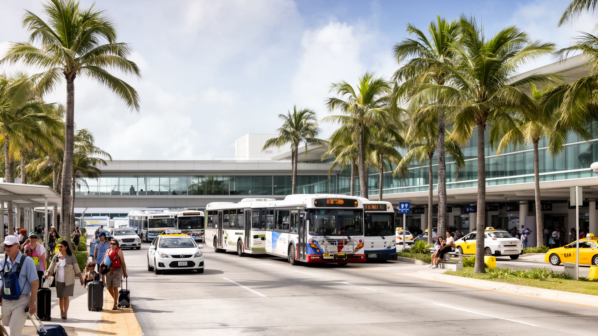
カンクン国際空港は、都市の規模を超えた影響力を持つ交通装置である。北米、欧州、中南米からの直行便は、ホテルゾーンだけでなく、リビエラ・マヤ、プラヤ・デル・カルメン、トゥルム、イスラ・ムヘーレス、コスメルへの観光流動を作る。空港に降りた人の多くは、送迎バン、タクシー、レンタカー、長距離バス、ツアーバスで目的地へ移り、カンクンは広域観光圏の分岐点になる。この交通の強さは雇用と投資を生むが、道路渋滞、事故、価格交渉、交通事業者間の対立、排出量の増加も招く。観光客の移動は滑らかに見えても、従業員の通勤は別の問題を抱える。早朝や深夜の勤務に合わせる公共交通、ホテルゾーンへのアクセス、内陸住宅地からの乗り換え、雨や台風時の移動は、生活の質を大きく左右する。空港が大きいほど、都市は世界と近くなる一方、航空需要の変動、感染症、燃料価格、治安イメージに左右されやすくなる。カンクンの移動を読むには、到着ロビーの華やかさだけでなく、従業員バス、荷物を運ぶ道路、港へ向かうフェリー、遺跡へ向かう幹線まで見る必要がある。空港は観光都市の心臓であり、その鼓動は広域の労働と環境負荷にも響いている。新しい鉄道や道路計画は移動を変える可能性を持つが、便利さが地価上昇や自然破壊を招くこともある。速く運ぶことと、地域が受ける負担を減らすことを同時に考える必要がある。
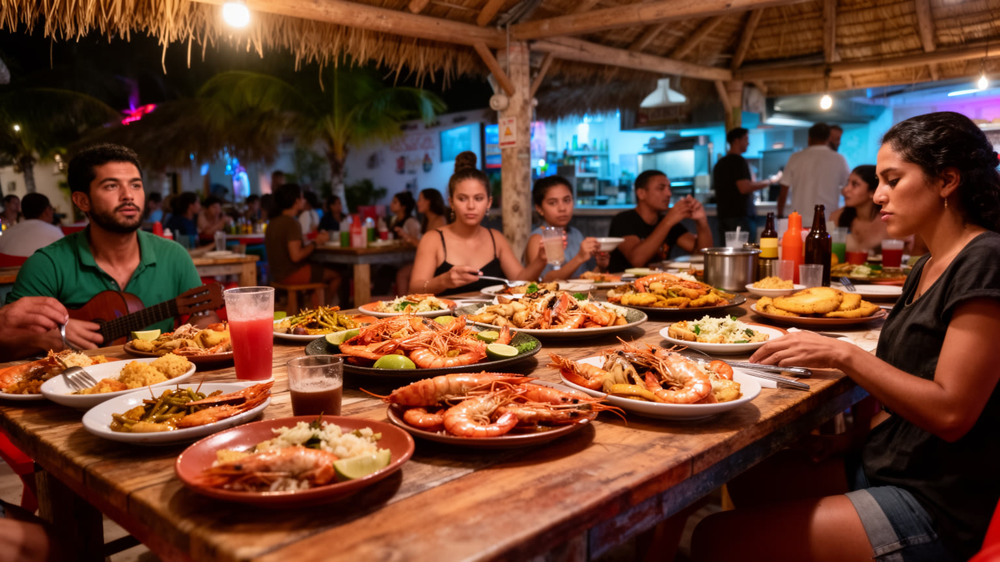
カンクンの食と夜の文化は、国際リゾートの演出とユカタンの地域性が重なる場所である。ホテルゾーンではビュッフェ、シーフード、ステーキ、バー、クラブ、ライブショーが訪問者の期待に合わせて並び、短い滞在でも非日常を感じられる。一方、内陸の街ではコチニータ・ピビル、パヌーチョ、サルブテ、タコス、果物ジュース、家族経営の食堂、市場の朝食が日常を支える。食文化は観光客向けに洗練されるほど、仕入れ、調理、配膳、清掃、深夜の帰宅を担う人の仕事を見えにくくする。ナイトライフは都市の収入源であり、若い旅行者を惹きつけるが、騒音、飲酒、治安、交通、安全管理、薬物取引への不安とも隣り合う。海辺の華やかな夜と、従業員が暮らす住宅地の夜は同じ都市の中で別のリズムを持つ。カンクンの食を深く読むには、名物料理を味わうだけでなく、ユカタンの農村、漁業、移住者の労働、ホテルの大量調達、廃棄物処理まで考える必要がある。観光の夜は都市を明るくするが、その明るさは地域の食と働く人の生活を尊重してこそ持続する。リゾートの味と地元の食堂の味をつなぐ視点が、カンクンを一面的な消費地にしない鍵になる。飲食店の多言語メニューやキャッシュレス化は便利さを高めるが、地元客が通える店が残ることも同じくらい重要だ。食の多様さは、観光収入と日常の手頃さが両立して初めて都市の豊かさになる。
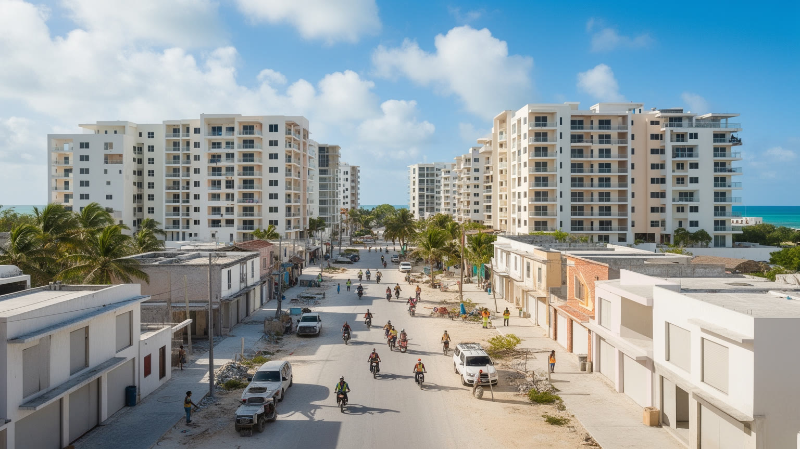
カンクンは観光地として計画された後、働く人とその家族を受け入れながら急速に大きくなった。内陸側には住宅団地、自己建設の家、学校、商店、病院、バスターミナル、公共施設が広がり、ホテルゾーンのイメージとは違う日常都市が形成されている。成長の速度が速いほど、道路、排水、上水、電力、公共交通、治安、廃棄物処理、緑地の整備は追いつきにくい。観光の仕事は都市へ人を呼び込むが、賃金が家賃や交通費に追いつかなければ、住民はより遠い住宅地へ押し出される。中心部や便利な地区では短期賃貸や商業化が進み、地元住民向けの価格や生活空間を変えることもある。台風や豪雨の際には、排水の弱い地区、低品質の住宅、遠い通勤路ほど被害を受けやすい。カンクンの住宅問題は、リゾートの裏側という単純な表現では足りない。そこには地方から移住してきた家族、マヤ系住民、若いサービス労働者、建設作業員、外国人長期滞在者が混ざり、新しい都市社会を作っている。観光都市を持続させるには、ホテルを増やすだけでなく、働く人が安全で近い場所に住み、子どもを育て、災害時にも支援へ届く都市基盤が必要だ。内陸の生活圏こそ、カンクンの本当の成長を映す場所である。公園、図書館、診療所、保育、夜間の照明、雨をしのげるバス停のような小さな設備は、観光宣伝には出にくいが生活の質を決める。住宅地への投資が弱いままでは、リゾートの繁栄は都市全体の安定へつながらない。
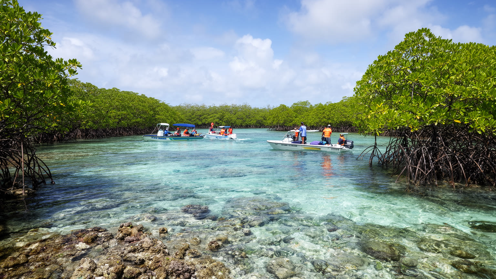
カンクン周辺の海は、サンゴ礁、海草藻場、マングローブ、ラグーン、魚類、ウミガメなど多様な生態系に支えられている。透明な海は観光写真の背景である前に、波を弱め、砂を生み、魚を育て、水質を保つ生きた基盤である。ダイビング、シュノーケリング、ボートツアー、釣り、島巡りはこの自然を利用するが、利用が増えすぎればアンカー、接触、日焼け止め、排水、ゴミ、騒音、餌付けが生態系を傷つける。サンゴは水温上昇や白化にも弱く、気候変動は観光地の将来に直接影響する。マングローブを埋めて開発すれば、鳥や魚の生息地だけでなく、高潮を和らげる自然の防御も失われる。環境保護区や利用規制は、観光業者に制約を与えるように見えるが、長期的には観光の品質を守る投資でもある。訪問者が海を楽しむほど、その海を守るルールを理解する必要がある。カンクンの自然は無限の資源ではなく、観光収入と地域の安全を同時に支える壊れやすいインフラである。海洋生態系を都市の外側の自然として扱うのではなく、道路や空港と同じ都市基盤として管理できるかが、これからのカンクンの価値を決める。学校教育、ガイドの説明、港での監視、ホテルの排水管理、客への行動ルールがそろって初めて保全は実効性を持つ。海を守る仕事は研究者だけでなく、船長、清掃員、行政、住民、旅行者が分担する日常の作業である。
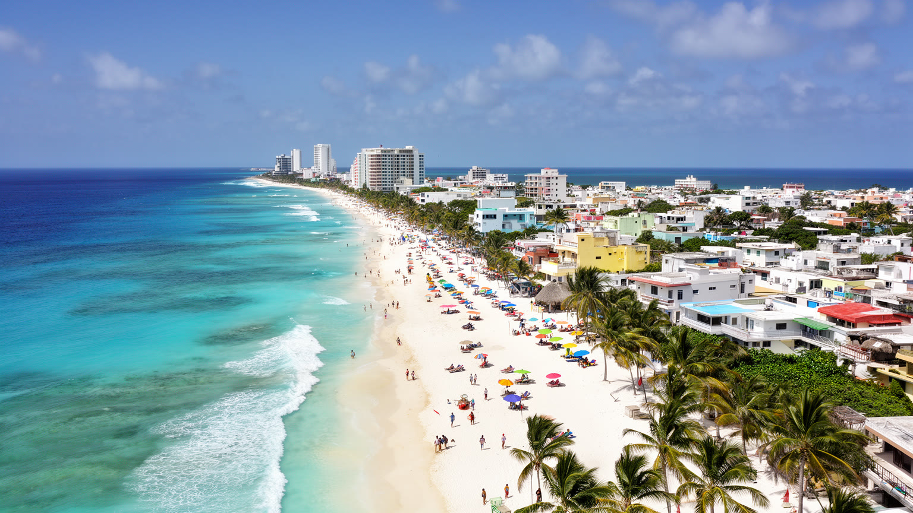
カンクンを総合的に読むと、世界的リゾートの明るい表面と、生活都市の負担が同時に見えてくる。ホテルゾーンの白砂、空港の国際便、遺跡への日帰りツアー、ナイトライフ、海洋レジャーは、メキシコの観光産業を強く押し上げる。一方で、観光に依存する経済は、感染症、治安報道、為替、航空運賃、台風、環境悪化に敏感で、雇用の安定も揺れやすい。内陸の住宅地、従業員の通勤、公共サービス、学校、医療、排水、治安を見なければ、カンクンは単なる楽園の絵になってしまう。マヤ遺産を入口に地域史を学ぶこと、食と夜の娯楽の背後にある労働を見ること、海岸とサンゴ礁を都市基盤として守ることが、この街を深く理解する鍵になる。カンクンの課題は、観光を否定することではない。観光が生む富を、海岸保全、住宅、交通、労働条件、教育、災害対策へどう戻すかである。訪れる人にとって魅力的な都市であり続けるには、住む人にとっても使いやすく安全な都市でなければならない。カンクンは、リゾートが都市を作り、都市がリゾートを支える関係を最も分かりやすく示すカリブ海の現代都市である。海の色、遺跡の物語、空港の利便性は強い魅力だが、それだけでは都市の持続性を保証しない。働く人の生活、自然の回復力、公共空間へのアクセスを同じ重さで読むと、カンクンは楽園像を超えた複雑な都市として見えてくる。